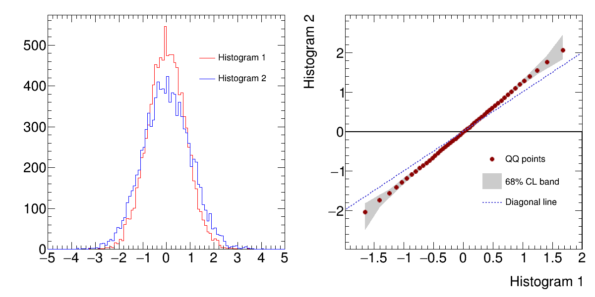

Draw a Quantile-Quantile Plot and Confidence Band¶
This is an example of drawing a quantile-quantile plot with a confidence level (CL) band.
Python source code: plot_quantiles.py
print(__doc__)
import ROOT
from rootpy.interactive import wait
from rootpy.plotting import Hist, Canvas, Legend, set_style
from rootpy.plotting.contrib.quantiles import qqgraph
from rootpy.extern.six.moves import range
set_style('ATLAS')
c = Canvas(width=1200, height=600)
c.Divide(2, 1, 1e-3, 1e-3)
rand = ROOT.TRandom3()
h1 = Hist(100, -5, 5, name="h1", title="Histogram 1",
linecolor='red', legendstyle='l')
h2 = Hist(100, -5, 5, name="h2", title="Histogram 2",
linecolor='blue', legendstyle='l')
for ievt in range(10000):
h1.Fill(rand.Gaus(0, 0.8))
h2.Fill(rand.Gaus(0, 1))
pad = c.cd(1)
h1.Draw('hist')
h2.Draw('hist same')
leg = Legend([h1, h2], pad=pad, leftmargin=0.5,
topmargin=0.11, rightmargin=0.05,
textsize=20)
leg.Draw()
pad = c.cd(2)
gr = qqgraph(h1, h2)
gr.xaxis.title = h1.title
gr.yaxis.title = h2.title
gr.fillcolor = 17
gr.fillstyle = 'solid'
gr.linecolor = 17
gr.markercolor = 'darkred'
gr.markerstyle = 20
gr.title = "QQ with CL"
gr.Draw("ap")
x_min = gr.GetXaxis().GetXmin()
x_max = gr.GetXaxis().GetXmax()
y_min = gr.GetXaxis().GetXmin()
y_max = gr.GetXaxis().GetXmax()
gr.Draw('a3')
gr.Draw('Xp same')
# a straight line y=x to be a reference
f_dia = ROOT.TF1("f_dia", "x",
h1.GetXaxis().GetXmin(),
h1.GetXaxis().GetXmax())
f_dia.SetLineColor(9)
f_dia.SetLineWidth(2)
f_dia.SetLineStyle(2)
f_dia.Draw("same")
leg = Legend(3, pad=pad, leftmargin=0.45,
topmargin=0.45, rightmargin=0.05,
textsize=20)
leg.AddEntry(gr, "QQ points", "p")
leg.AddEntry(gr, "68% CL band", "f")
leg.AddEntry(f_dia, "Diagonal line", "l")
leg.Draw()
c.Modified()
c.Update()
c.Draw()
wait()
Total running time of the example: 0.12 seconds